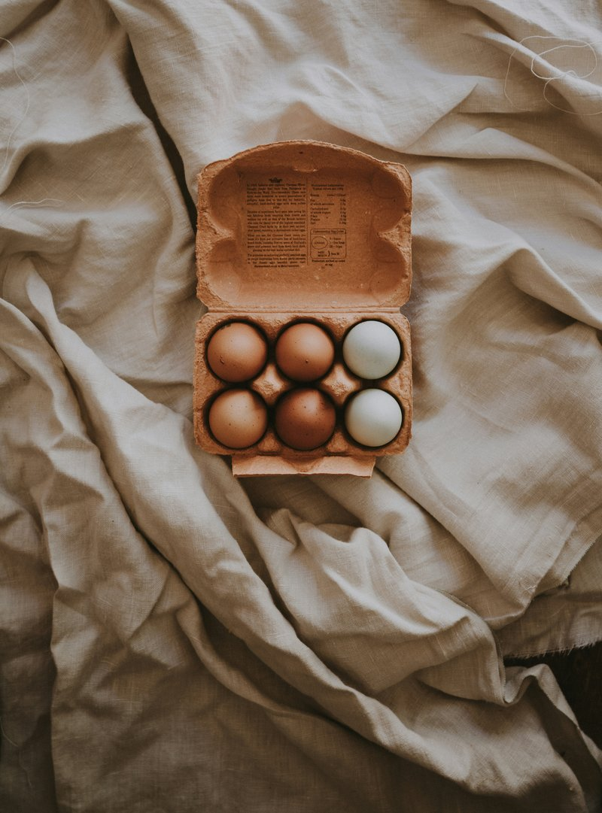

If you buy eggs at the grocery store, they live in the fridge. If you collect eggs from your own hens, they can sit on the counter for weeks. The difference isn't freshness — it's a microscopic coating called the bloom.

The bloom — sometimes called the cuticle — is the last thing a hen adds before the egg leaves her body. It's a thin protein-based coating that dries almost instantly on contact with air, sealing the thousands of microscopic pores in the eggshell. A sealed egg is a sterile egg. Bacteria can't get in, and moisture can't get out. The egg stays fresh at room temperature for a month or more, no refrigeration required.
What happens when you wash an egg
Water strips the bloom. Once it's gone, those pores are open — and bacteria have a direct path to the inside of the egg. This is why washed eggs must be refrigerated. It's also why the USDA requires commercial eggs to be washed and refrigerated in the United States — the washing removes the natural protection, so cold storage becomes mandatory.
In most of Europe, the opposite approach is standard: eggs are sold unwashed, at room temperature, bloom intact. Both systems work. They just pick different sides of the same trade-off. Wash the egg and refrigerate it, or leave the bloom alone and keep it on the counter.
The float test: a quick freshness check
An eggshell is porous whether the bloom is intact or not. Over time, air slowly moves into the egg through those pores, and the air cell inside grows larger. This is normal — it's how an egg ages. The float test works because older eggs have more air inside them and become more buoyant.
Fill a bowl with cool water and gently place the egg in it:
- Sinks and lays flat on the bottom. Fresh. The air cell is tiny. Use it for anything — poaching, frying, baking.
- Sinks but stands on one end. A week or two old. Still perfectly good. The air cell has expanded enough to tip the egg upward. Use it for hard boiling — older eggs peel more easily.
- Floats to the surface. Old. The air cell is large enough to make the egg buoyant. It might still be fine — crack it into a separate bowl and smell it before using. If it smells off, toss it. If it smells like nothing, cook it today.
The float test tells you age, not safety. A floating egg isn't automatically bad — it's just old. Your nose is the real test.
Storage, with or without the bloom
If your eggs are unwashed and the bloom is intact, keep them on the counter. They'll stay fresh for three to four weeks. If you've washed them, or if you bought them refrigerated, keep them in the fridge — cold eggs must stay cold. Bringing a cold egg to room temperature causes condensation, and condensation is just water, and water strips the bloom. You're in the fridge system now.
Either way, store eggs pointy-end-down. The air cell is at the round end, and keeping it up reduces moisture loss and keeps the yolk centered. An egg carton does this automatically — that's why the cups are shaped the way they are.
The Farm Fresh Egg Handling Card is a printable reference you can cut out and tuck into every carton of eggs you sell or share. Six cards per sheet — covers the bloom, washing do's and don'ts, storage rules, and the float test. Small enough to fit inside a standard egg carton.
Egg Handling Card on Etsy →